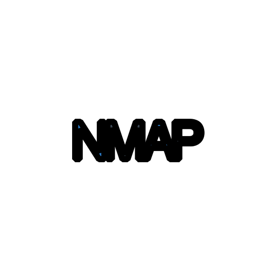
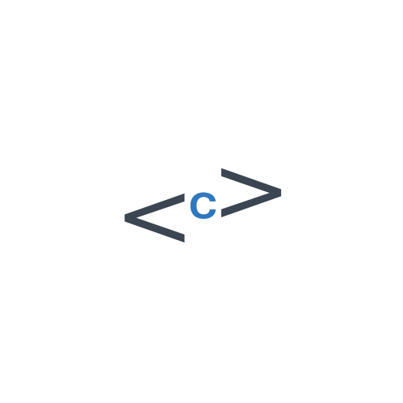
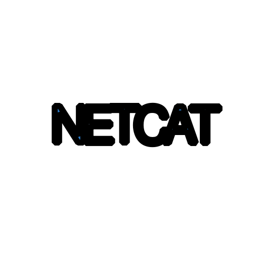

tema3-2b

NMAP¿Que es NMAP?: Es un programa empleado para
evaluar la seguridad de
sistemas informáticos.
NMAP¿Para que sirve NMAP?: sirve para descubrir
servicios o servidores en
una red informática. NMAP¿Cómo funciona NMAP?: Nmap envía unos paquetes
definidos a otros
equipos y analiza sus respuestas.

NMAPComandos NMAP
NMAPPráctica NMAP

NETCAT¿Que es NETCAT?: Netcat es una herramienta de
red
que permite a través
de intérprete de comandos y con una sintaxis sencilla abrir puertos
NETCAT¿Para que sirve NETCAT?: Entre sus múltiples
aplicaciones, es
frecuente la depuración de aplicaciones de red. También es utilizada a menudo para abrir puertas
traseras en un sistema. NETCAT¿Cómo funciona NETCAT?: Crea ,envia y extrae
información mediante el
"SOCKET". NETCATComandos NETCAT